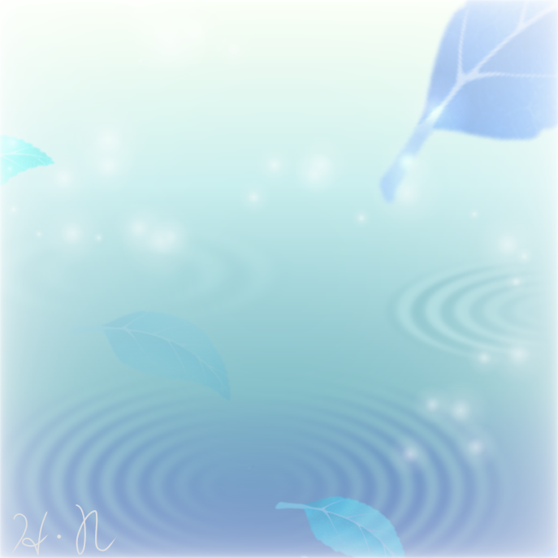

安らぎの音

生活の中で安らぎの音というのはいくつも存在する。安らぎの音と聞いて想像するのはリラックスできる音であろう。
しかしそれ以外にも、睡眠を妨げぬ音や、気持ちを落ち着かせるなど明確な理由で存在している音などがある。
私が知って驚いた豆知識を今日は話していく。
- トイレの水(川など)の音~水の音は人間をリラックスされる音であるため設置されている~
- 勉強するときに聞き流すオーケストラのミュージック~歌詞のない音楽は交感神経を刺激しないためリラックスして集中することができる~
- 救急車のサイレン~夜になると音程が変わる、人間の交感神経を刺激しない音程に設定され、睡眠への妨げを考慮している~
リラックスできるおすすめの音源は
こちらをクリック